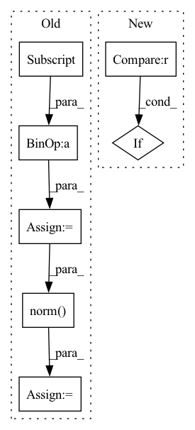

Pattern ID :352
Before Change
// print(mask.size())
// append cls token
cls_token = self.cls_token + self.pos_embed[:, :1, :]
cls_tokens = cls_token.expand(x_masked.shape[0], -1, -1)
x = torch.cat((cls_tokens, x_masked), dim=1)
// apply Transformer blocks
for blk in self.blocks:
x = blk(x)
x = self.norm( x)
// compress for communication
x = self.compressor(x)
return x, mask, ids_restoreAfter Change
// cat x1 and x_next to encoder independently
BA, C, H, W = x1.size()
x1 = x1.unsqueeze(1)
if self.time_stamp>1 :
x_ind = torch.cat((x1, x_next), dim=1) // [bxa, ts, C, H, W]
else:
x_ind = x1In pattern: SUPERPATTERN
Frequency: 4
Non-data size: 7
Instances Fragment ID: 2170881
Project Name: coperception/star
Commit Name: 731f6b1da07455be85cd59f6a8f6e795d902aa7a
Time: 2022-06-04
Author: 954742885@qq.com
File Name: coperception/models/transformers/multiagent_mae.py
M Class Name: AmortizedIndivMMAEViT
N Class Name: AmortizedIndivMMAEViT
M Method Name: forward_encoder(4)
N Method Name: forward_encoder(4)
M Parent Class: MultiAgentMaskedAutoencoderViT
N Parent Class: MultiAgentMaskedAutoencoderViT
M File Name: coperception/models/transformers/multiagent_mae.py
N File Name: coperception/models/transformers/multiagent_mae.py
M Start Line: 842
M End Line: 865
N Start Line: 869
N End Line: 898
Before Change
// print(mask.size())
// append cls token
cls_token = self.cls_token + self.pos_embed[:, :1, :]
cls_tokens = cls_token.expand(x_masked.shape[0], -1, -1)
x = torch.cat((cls_tokens, x_masked), dim=1)
// apply Transformer blocks
for blk in self.blocks:
x = blk(x)
x = self.norm( x)
// compress for communication
x = self.compressor(x)
return x, mask, ids_restoreAfter Change
// cat x1 and x_next to encoder independently
BA, C, H, W = x1.size()
x1 = x1.unsqueeze(1)
if self.time_stamp>1 :
x_ind = torch.cat((x1, x_next), dim=1) // [bxa, ts, C, H, W]
else:
x_ind = x1 Fragment ID: 2170880
Project Name: coperception/star
Commit Name: 731f6b1da07455be85cd59f6a8f6e795d902aa7a
Time: 2022-06-04
Author: 954742885@qq.com
File Name: coperception/models/transformers/multiagent_mae.py
M Class Name: AmortizedFusionMMAEViT
N Class Name: AmortizedFusionMMAEViT
M Method Name: forward_encoder(4)
N Method Name: forward_encoder(4)
M Parent Class: MultiAgentMaskedAutoencoderViT
N Parent Class: MultiAgentMaskedAutoencoderViT
M File Name: coperception/models/transformers/multiagent_mae.py
N File Name: coperception/models/transformers/multiagent_mae.py
M Start Line: 564
M End Line: 589
N Start Line: 577
N End Line: 611
Before Change
[[0, 0, 0], [0, 0, 1]], c.matrix
)
v0 = [0, 0, -1]
v1 = vec[1] - vec[0]
v1 /= np.linalg.norm( v1)
angle = mercury.geometry.angle_between_vectors(v0, v1)
if angle > max_angle:
logger.error(
f"angle ({np.rad2deg(angle):.1f} [deg]) > "After Change
self.ri.attachments[0].assign()
path = self.ri.planj(j, obstacles=[self.plane])
if path is None :
logger.error(f"Goal state is invalid: {act_result.action}")
before_return()
return False, result Fragment ID: 2170883
Project Name: wkentaro/safepicking
Commit Name: 3ab03d4c4898b00b24a02effe1b9d995ecfa62f5
Time: 2021-05-07
Author: www.kentaro.wada@gmail.com
File Name: examples/grasp_with_intent/env.py
M Class Name: GraspWithIntentEnv
N Class Name: GraspWithIntentEnv
M Method Name: validate_action(2)
N Method Name: validate_action(2)
M Parent Class: Env
N Parent Class: Env
M File Name: examples/grasp_with_intent/env.py
N File Name: examples/grasp_with_intent/env.py
M Start Line: 324
M End Line: 378
N Start Line: 289
N End Line: 396